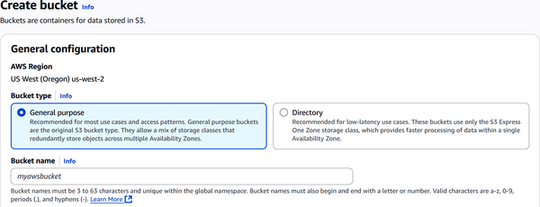
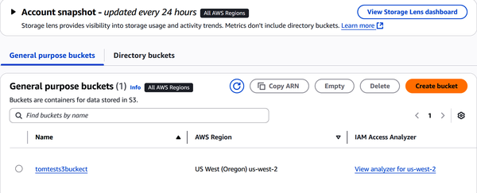

Storing today’s massive amounts of data takes more than just traditional solutions. Companies need storage that scales, maintains reliability, and doesn’t pressure the budget.
That’s where AWS storage services prove their worth. There’s Amazon S3 for object storage, EBS for block storage, Elastic File System (EFS) and FSx for shared file storage, Storage Gateway for bridging on-premises and cloud data, and AWS Backup for data protection. Together, these services form a solid toolkit for almost any workload.
And yes, these are all topics that frequently appear on the AWS Certified Cloud Practitioner exam. It’s important to understand what these services do, their use cases, and how they integrate with the rest of AWS.
By 2025, Edge Delta projects that the world will generate about 175 zettabytes (ZB) of data (this is one billion terabytes). This is a massive jump from the 33 ZB produced in 2018. Nearly half of this massive volume will live in the cloud.
Here are some of the main drivers for the growth:
Training cutting-edge models like those from OpenAI, Microsoft, and Amazon takes enormous amounts of data. Some models crunch through massive datasets that span much of the internet. And as training moves beyond text to images and video, the appetite for data only grows.
Billions of people carry smartphones, and they’re streaming, uploading, and browsing constantly.
These include sensors for smart homes and connected factories. Each one gathers a steady stream of data.
Platforms like Netflix, Peacock, and Disney+ attract millions of viewers who watch content online every day.
All this data has to go somewhere. Storing it isn’t cheap, and the scale requires advanced systems like direct-attached storage, network-attached storage (NAS), or storage area networks (SANs). These setups can be powerful but also complex and expensive to manage.
Under the AWS Shared Responsibility Model, AWS takes care of the infrastructure that powers its storage services. This is known as security of the cloud. Customers, however, are responsible for security in the cloud: configuring encryption, setting access controls, and managing backup policies. This division ensures that while AWS provides a secure, reliable foundation, customers must still take proactive steps to safeguard their own data.
Let’s take a look at the Amazon storage services you’ll likely see on the exam.
Simple Storage Service (S3) is AWS’s service for object storage. This is available through the AWS console, the CLI, SDKs, or REST APIs.
Behind the scenes, S3 runs on a massively scalable infrastructure. There’s no cap on how much you can store overall, and each individual object can be as large as 5 terabytes.
Durability is one of S3’s biggest advantages. It’s built to keep your data safe with 99.999999999% durability referred to as “11 nines” durability by automatically distributing copies of your files across multiple Availability Zones. You also get 99.99% availability, which is backed by a service-level agreement (SLA). This is a contract between a service provider and a customer, which sets the levels of service for a system.
It’s important to note, however, that not all S3 storage classes replicate data across multiple AZs. For example, S3 One Zone-Infrequent Access (IA) and S3 Express One Zone store data in a single Availability Zone, which reduces redundancy and results in lower durability compared to multi-AZ storage classes. Customers should select a storage class based on their specific durability, availability, and cost requirements.
In terms of security, S3 supports encrypted data in transit (using SSL/TLS) and at rest (server-side or client-side encryption). You can also control who has access with IAM roles, bucket policies, and features like Object Lock, which is useful for compliance needs like write-once-read-many (WORM) storage.
Here are common use cases for S3:
S3 is useful for hosting website assets, mobile app backends, gaming content, and files for distribution.
S3 integrates with AWS tools like Athena, Redshift, and Elastic MapReduce (EMR) for large-scale data analysis.
S3 has features such as lifecycle policies that can be used for off-site backups. Lifecycle policies consist of rules that shift older backups to cheaper storage tiers or delete them when they’re no longer needed.
You can trigger Lambda functions on file uploads, integrate with the API Gateway, or route messages through SNS and Simple Queue Service (SQS) for automation.
Amazon S3 allows you to balance cost and performance with its tiered storage system. Instead of treating all your data the same, you can pick a storage class that matches how often you need to access the data, how quickly you need to retrieve it, and how much availability you want.
Let’s take a look at S3’s storage classes.
If you need fast, reliable access to your data, S3 Standard is your best starting point. It’s the default storage class in S3. Your data is spread across at least three Availability Zones, so even if one zone has issues, your files stay safe and available.
This class is suitable for cloud native applications, dynamic websites, content delivery, and analytics workloads. You get low latency and high throughput.
S3 Intelligent-Tiering is designed for when access to your data is unpredictable. The service automatically moves your data between five access tiers: Frequent Access, Infrequent Access, Archive Instant Access, Archive Access, and Deep Archive Access. The last two tiers—Archive Access and Deep Archive Access—require opt-in but provide additional cost savings for rarely accessed data.
You still get the same multi-AZ durability and millisecond-level latency of S3 Standard.
For workloads where speed is critical and cross-AZ resilience isn’t required, S3 Express One Zone is optimized for sub-millisecond latency and high throughput. This makes it ideal for applications that demand ultra-fast data access without the overhead of multi-AZ replication.
S3 Express is for use cases like running real-time analytics, ML training, or tightly coupled workloads near compute resources (like AWS Local Zones or Outposts).
When data persists for long durations and does not get accessed much, Amazon S3 offers two storage classes that can save you money without sacrificing durability.
S3 Standard-IA is designed for infrequently accessed data that still needs to be readily available when accessed. It provides the same 11 nines of durability as S3 Standard and stores data across multiple AZs, but with slightly lower availability at 99.9%. The trade-off is lower storage costs, balanced by retrieval fees. This makes it a good fit for backups, disaster recovery plans, and older datasets that don’t change often.
S3 One Zone-IA is a lower-cost option that stores your data in one AZ. You still get the same high durability, but availability drops to 99.5%, and there’s no cross-AZ redundancy.
When you need to store data long-term but access it rarely, S3’s archive classes provide flexible retrieval options depending on how fast you need the data back. There are AWS services for this:
You get millisecond-level access, multi-AZ durability, and much lower storage costs compared to active storage classes. It’s a good choice for things like archived media, medical imaging, or compliance records that need to be available on demand.
This gives you a range of retrieval speeds, from minutes for expedited requests to several hours for bulk jobs. It’s built for long-term data that you access occasionally. This class is good for backups or archives that need to stay safe but aren’t time-sensitive.
This option is built for data you rarely, if ever, need to access, such as legal records or regulatory data that you have to keep for years. You’ll wait 12 to 48 hours for retrieval, but you’ll pay significantly less to store it.
When data needs to stay within a specific geographic boundary—whether for compliance, sovereignty, or performance—Amazon S3 offers options designed to meet those strict requirements.
S3 on Outposts brings the familiar S3 interface to your on-premises environment using AWS Outposts hardware. Your data stays local, stored on redundant devices within the Outposts rack, but it’s managed using the same S3 API you’d use in the cloud.
Directory buckets in Dedicated Local Zones anchor your data inside a tightly controlled perimeter. These buckets support classes like Express One Zone and One Zone-IA. They allow you to keep data physically within a jurisdiction while still using S3’s robust API, access controls, and security features.
For scenarios where data must move quickly across regions, S3 Transfer Acceleration uses Amazon CloudFront’s globally distributed edge locations to speed up uploads to S3 buckets. This is especially valuable for transferring large files or datasets over long distances, helping reduce latency and improve performance for globally distributed teams.
Let’s see how to create an S3 bucket:
Log in to AWS.
In the search box, enter S3. Select it.
Click “Create bucket.”
Enter a name for the bucket. Figure 10-1 shows the setup screen for this.

Choose an AWS region. Select the one closest to you so as to reduce latency.
Use the default bucket type of “General purpose,” which is the standard for multiple AZs.
Enter a name for the S3 bucket.
You will select the object ownership settings. The recommended option is to disable access control lists (ACLs) by choosing “Bucket owner enforced.” This makes your account the owner of all objects in the bucket and simplifies access management.
You can set whether your files are publicly accessible. But the recommended option is to block all public access.
Select Disable for “Public versioning.” This means there will not be any versions maintained for your objects.
You can set the encryption settings. Select “Amazon S3 managed Keys.”
Select “Create bucket.” Figure 10-2 shows your S3 bucket.

Click the name of your bucket. Select Upload, and you can choose one or more files or folders to upload.
Amazon EBS is the main boot storage for your EC2 instances. It’s a durable, high-performance block storage system that automatically replicates data within its Availability Zone. This means if the underlying hardware fails, your data remains protected. AWS reports annual failure rates (AFRs) of 0.1–0.2% for standard EBS volumes, which makes them reliable for everything from development workloads to production databases. Different volume types offer varying levels of performance and resilience, letting you balance cost, throughput, and availability based on your needs.
Performance remains consistently low in latency. You can also adjust volume size, performance, and type dynamically using Elastic Volumes. You can do this without needing to stop your instance or experiencing downtime.
EBS offers several volume types tuned for different needs:
These work well for boot volumes, development environments, and most general-purpose applications. Gp3, in particular, provides a baseline performance of 3,000 IOPS and 125 MiB/s throughput at any volume size, with the ability to provision additional performance up to 80,000 IOPS and 2,000 MiB/s throughput for an additional cost. This delivers a strong balance of predictable performance, flexibility, and cost efficiency.
If you’re running mission-critical database workloads, these volumes are a good option. They scale up to 256,000 IOPS and 4,000 MB/s throughput, with sub-millisecond latency and sizes up to 64 terabytes. This combination supports heavy database transactions without bottlenecks.
This is suitable for big data workloads and data warehouses where high throughput (MB/s) is more important than IOPS.
This is built for infrequently accessed data with moderate throughput requirements.
For security, EBS volumes support encryption both at rest and in transit. They use Advanced Encryption Standard (AES)-256 encryption with AWS KMS.
Snapshots in EBS act as point-in-time backups. These are incremental, meaning only changed data blocks are stored. This reduces both backup time and storage costs.
You can use snapshots to create new volumes, replicate data across AZs or regions, share data between AWS accounts, or enable fast restores. Other advanced snapshot features include locking for compliance, cross-region copies, archiving, and automated lifecycle management with Data Lifecycle Manager.
When you attach an EBS volume to an EC2 instance, it functions like a native block device. You can format it with any file system your OS supports and treat it like a local disk. The data remains persistent across reboots and detachments.
Multi-Attach for io2 Block Express lets you attach one EBS storage volume to multiple EC2 instances at the same time (as long as they are in the same Availability Zone). This is useful for high-availability applications that need multiple servers to access the same data. Instead of making several copies of the same storage, all the servers can read/write to the same volume. This feature is designed for very high-performance and mission-critical workloads, but the application must be written to handle multiple servers writing to the same storage safely.
AWS Elastic File System (EFS) is a plug-and-play file storage system in the cloud. It can also connect to on-premises servers.
One of its most helpful features is how it scales automatically. If your storage needs grow, EFS expands to keep up, scaling to petabytes without any interruptions. When your needs shrink, it scales down just as easily.
Here are some of its other key features:
EFS supports standard NFS (Network File System) protocols, versions 4.0 and 4.1. Multiple EC2 instances, or even your Linux servers running on-premises, can read from and write to the same file system at the same time. This makes it a good choice for workloads that need shared file access.
Similar to S3’s tiering, EFS can move files you don’t use often into lower-cost storage classes like Infrequent Access or Archive. This happens automatically.
You can set up multiple entry points into the same file system. Each access point can have its own root directory and enforce specific POSIX (Portable Operating System Interface) user and group permissions (POSIX is a set of standards to maintain compatibility between operating systems). This approach makes it easy to secure different applications that share the same EFS.
When you create a regional file system, EFS stores your data redundantly across multiple AZs. It offers 11 nines’ (99.999999999%) durability and up to four nines’ (99.99%) availability. Throughput and IOPS scale automatically to meet your workload demands.
Amazon FSx is a fully managed, high-performance file system that offers multiple options to fit different workload needs:
FSx for Windows File Server is built specifically for Windows environments. It supports the Server Message Block (SMB) protocol, integrates smoothly with Active Directory, and includes features like file restore, quotas, access controls, and automatic backups. All of this is done with enterprise-grade security and scalability.
FSx for Lustre is designed for compute-heavy workloads such as high-performance computing (HPC) and big data processing. It delivers ultra-fast, scalable storage with millions of IOPS and high throughput. It supports POSIX access for Linux-based applications and integrates directly with Amazon S3 for durable data storage.
FSx for NetApp ONTAP brings the popular enterprise-grade NetApp ONTAP file system to AWS. It provides advanced features like multiprotocol access (NFS; SMB; Internet Small Computer Systems Interface, or iSCSI), inline data deduplication, compression, thin provisioning, and SnapMirror replication for disaster recovery. It’s well-suited for enterprise applications needing flexible, shared storage.
FSx for OpenZFS offers a fully managed Zettabyte File System (ZFS) with strong data integrity, snapshots, and cloning capabilities. It’s a good choice for Linux-based workloads that need robust data protection and efficient storage management.
Deployment and scaling are straightforward across all FSx variants. You can adjust capacity or performance levels, choose between single or multi-AZ setups, and integrate these file systems with other AWS services to meet diverse workload requirements.
AWS Storage Gateway allows you to connect your on-premises data center to AWS storage without having to rip and replace your existing setup. You deploy it as a virtual appliance, running on VMware, Hyper-V, or Kernel-based Virtual Machine (KVM). You can also launch it as an EC2 instance. Once deployed, it securely connects your local applications to AWS storage. It also caches frequently accessed data locally, so your users get low-latency performance.
There are four types of Storage Gateway:
This gateway lets you present Amazon S3 as a file share via NFS or SMB protocols. Files are stored in S3 as objects, so you can apply S3 lifecycle policies for archiving or tiering. It’s a good choice for backups, archives, and hybrid data workflows.
This type gives your on-premises users access to Amazon FSx file shares—typically FSx for Windows File Server—using SMB. It caches files locally and keeps them synchronized with FSx. This option is good for scenarios where teams in multiple locations need to share files seamlessly.
If you need block storage, Volume Gateway provides it using iSCSI, a network protocol that allows you to send commands for local hard drives over IP networks. You can run it in cached mode, where your main data sits in S3 and frequently accessed data is cached locally, or in stored mode, where your full data set remains on-premises and backups are sent to S3. This flexibility makes it a good option for hybrid storage needs and disaster recovery plans.
This replaces physical tape libraries with a virtual tape library (VTL). Your existing backup software treats it like a normal tape system, but behind the scenes, virtual tapes are stored in S3 and can be archived to Glacier tiers.
Setting up Storage Gateway is straightforward. You install the appliance, activate it through the AWS console or API, choose the gateway type you need, and connect it to the appropriate AWS storage service. Your applications continue using standard file or block protocols without realizing that the data now lives in the cloud.
AWS Backup is a fully managed service that centralizes backup management across your AWS resources and hybrid environments. Instead of juggling separate scripts or tools for each service, you can set up everything from a single console, the CLI, or APIs.
With AWS Backup, you can create backup plans that define what gets backed up, how often, and for how long. You can set schedules, retention rules, and lifecycle transitions to cold storage, and specify vault locations.
One of its strengths is policy-based backup. You can assign backups to resources using tags, automate lifecycle management, and run incremental backups to cut down on storage costs. All backups are encrypted with KMS by default.
If you need to replicate backups for disaster recovery or compliance, AWS Backup makes that straightforward too. You can copy backups across regions or accounts, ensuring you have resilient copies in different locations. For example, you might schedule DynamoDB or RDS backups to be retained and restored in another region to meet your recovery time objectives (RTOs) and recovery point objectives (RPOs).
Vaults in AWS Backup are immutable. This means that data can’t be changed once it’s written.
For hybrid environments, AWS Backup integrates with Storage Gateway and VMware workloads, giving you a centralized way to manage backups across on-premises and cloud data.
Table 10-1 summarizes the different AWS storage services.
| AWS service | Key points |
|---|---|
|
Amazon S3 |
|
|
Amazon EBS |
|
|
Amazon EFS |
|
|
AWS FSx |
|
|
AWS Storage Gateway |
|
|
AWS Backup |
In this chapter, we learned about the key AWS storage services that power modern cloud applications. We looked at Amazon S3 for scalable object storage, Amazon EBS for reliable block storage with flexible performance options, and Amazon EFS for seamless file storage with shared access. We also covered specialized services like AWS FSx for Windows and HPC needs, Storage Gateway for hybrid environments, and AWS Backup for centralized, policy-based data protection.
In the next chapter, we’ll take a look at AWS services for databases.
To check your answers, please refer to the “Chapter 10 Answer Key”.
What is the main advantage of Amazon Simple Storage Service (S3)’s durability model?
It automatically distributes copies across multiple Availability Zones.
It uses local redundant array of inexpensive/independent disks (RAID) storage for durability.
It relies on customer-managed backups.
It only stores data in one Availability Zone.
What is the retrieval time for S3 Glacier Deep Archive?
Milliseconds
Minutes
Hours
12 to 48 hours
Which AWS service enables tape-based backup applications to store data in Amazon S3 or Glacier?
FSx File Gateway
Volume Gateway
Tape Gateway
S3 File Gateway
Which AWS storage service supports Multi-Attach to connect a volume to multiple Elastic Compute Cloud (EC2) instances simultaneously?
Amazon S3
Amazon Elastic File System (EFS)
Amazon Elastic Block Store (EBS) io2 Block Express
AWS Backup
What type of storage is Amazon EBS categorized as?
Object storage
Block storage
File storage
Archive storage